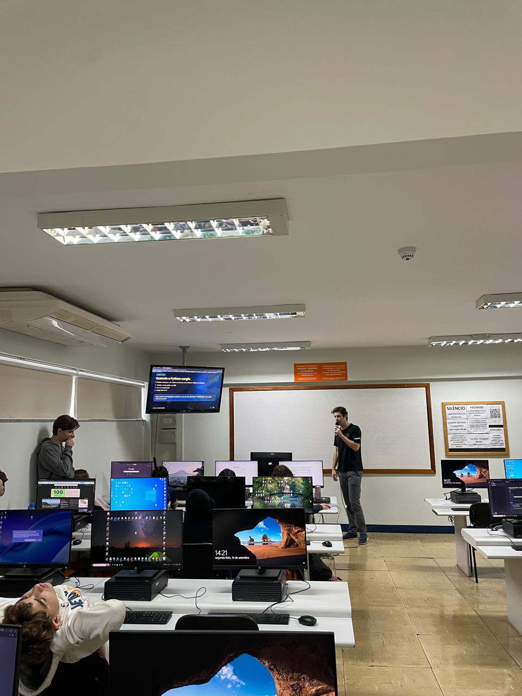

Relatório – 23ª Aula
Data: 14/09/2026
Turma: 8º e 9º ano
Instrutor: Thiago Varoni
Relatório – Phyton
Hoje voltamos a programação normal, após a semana do feriado do 7 de Setembro, e tivemos a 23ª aula do LondrineseTech, focada em Phyton. A aula funcionou com o instrutor Fatobene explicando a origem e a imporância do Phyton, porque ela é considerada uma linguagem de alto nível, e porque ela é tão popular no mundo da programação. Em seguida, ele apresentou um exemplo simples de código m phyton, mostrando como criar uma função e como utiliza-la. Ao final da aula fizemos um Blooket para revisar os conceitos aprendidos na aula, e os alunos participaram ativamente, respondendo as perguntas e discutindo as respostas. A aula foi muito produtiva e os alunos demonstraram interesse e engajamento durante o processo de aprendizado.
